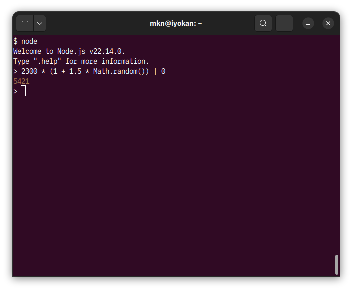

これはなに
みかんちゃん名物のひとつに「過剰な勘定」があります。
これは、みかんちゃんに請求された金額に、JavaScript の式 (1 + Math.random()) などを乗じた金額を支払うものです（下図参照）。
Math.random() に適当な係数が乗ぜられる場合もあります。

この方法には、いくつかの問題点があります。 まず、みかんちゃんが計算を何回か試行し、「都合のよい」値が得られたときのスクリーンショットだけを提出することが考えられます。 一方、請求する側が同様のことをすれば、みかんちゃんは、あっという間に破産してしまうかもしれません。
表示されている値を得るまでのプロセスを漏れなく保証することは、かなり難しそうです。 そこで、両者のいづれか一方が結果を恣意的に選べないような、双方が納得できる乱数の生成方法を考えます。 ここでは、次の手順を提案します。
- 請求する側は、秘密の値 PC を用意します。 同様に、みかんちゃんは、秘密の値 PM を用意します。
- 請求する側は、暗号学的ハッシュ関数 H を用いて H(PC) を計算し、この値をみかんちゃんに伝えます。 同様に、みかんちゃんは、H(PM) を計算し、この値を請求する側に伝えます。
- 請求する側は、PC をみかんちゃんに伝えます。 同様に、みかんちゃんは、PM を請求する側に伝えます。
- 慎重になるのであれば、両者とも、伝えられた秘密の値のハッシュ値を計算し、予め伝えられていたハッシュ値と一致することを確かめます。
- 両者は、PC と PM とを連結した値 PC || PM を種として、乱数関数 R を用いて R(PC || PM) を計算します。 この値を求める乱数とします。
ハッシュ関数 H が適切な性質を備えていれば、相手の秘密の値のハッシュ値を知った後に自分の秘密の値を都合よく変更することが困難になります。 なお、手順の途中で請求する側やみかんちゃんが逃げ出してしまえば、残された側は、それを受け入れるしかありません。
請求してみよう
ここでは、簡単のために H = R = SHA-256 としています。